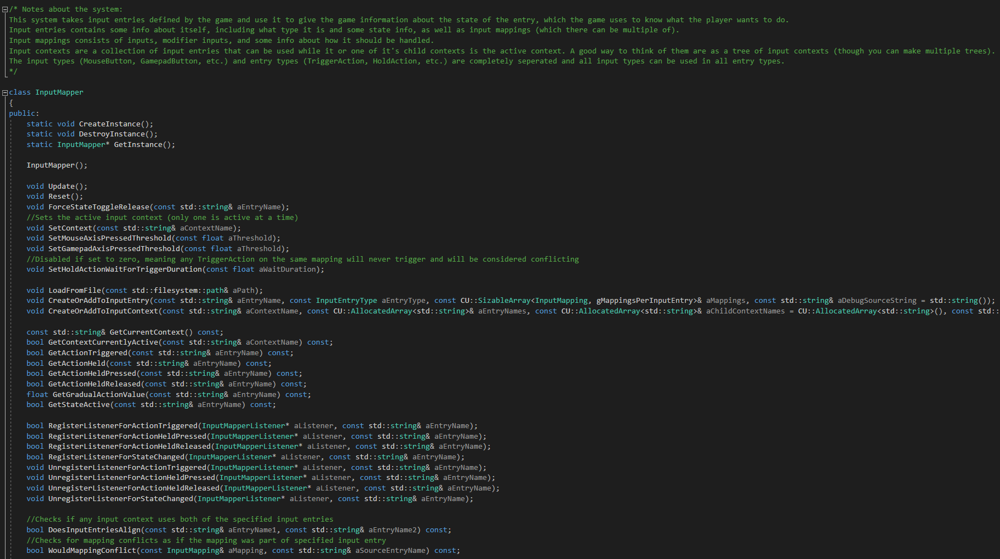
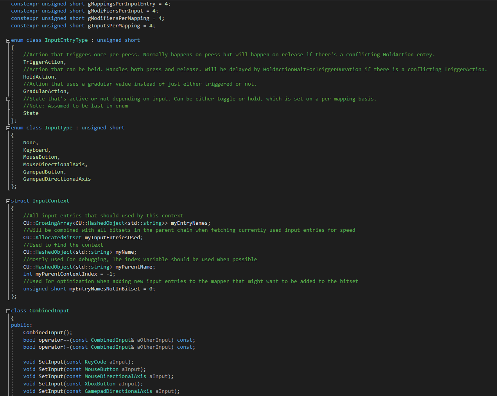

Summon Engine
Since graduating from The Game Assembly I've worked on my own game engine in my spare time. Here's some things I've implemented in it.
Widget System
I created a widget system from the ground up for the engine, with several iterations made for either improving the performance or the workflow.
Read more
Rendering
As part of a course at The Game Assembly I made a 3D rendering engine from scratch using DirectX 11.
I continued to work on it after the course ended since it's something I enjoy and like to learn more of, which then turned into my own game engine.
Outside the course I've added a lot of features as well as restructured the entire engine to work with multiple rendering APIs.
The restructure was needed as I wanted to add DirectX 12 support and it turned out great, allowing me to have an incomplete DX12 implementation without preventing me from testing other stuff in DX11 mode.
A couple examples of rendering features I've added are font rendering and instanced animations.
I also started adding OpenVR support, but never took the time to finish it.
I came as far as rendering the world correctly, even rotating works fine until you move your head.
Model Editor
As part of the editor to my engine I wanted to have a way to create low poly terrain, so that I'd be able to both place objects and modify the terrain without using external tools. To do that I basically created a simple model editor where you can manipulate vertices, edges and faces by using tools like move, rotate and scale, as well as some more complicated ones like extrude, combine vertex and split. It took about a month to implement in my spare time and was one of the most satisfying things I've worked on, as it was a fun challenge and I was able to get a complete understanding of how to manipulate vertex and index buffers.
Input System
While working on Bloodhunt I became fustrated with how UE4 handled input and started thinking about how I would structure an input system to solve the issues I was having.
Some years later I felt like improving the input code in my engine, and ended up creating the input system I had been thinking about for so long over a summer vacation.
I ended up creating multiple new useful containers for this, as well as making a big refactor on the underlying input handler that reads key presses and such from the OS.
There were also surprisingly many edge-cases that popped up, but they were quite satisfying to fix on both the design side and the code side as this system is pretty tightly designed.

Input Mapper
Input Mapper Types